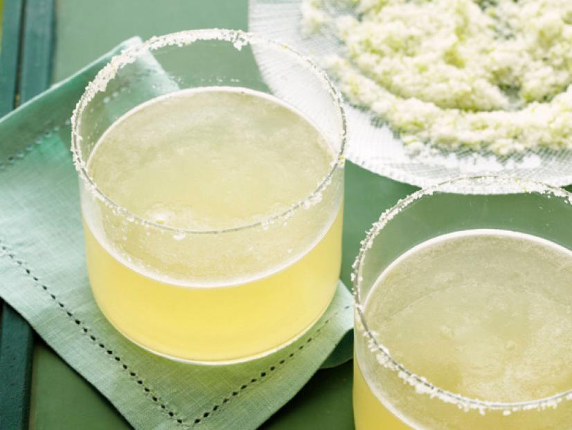

INGREDIENTS
Bring a large pot of salted water to a boil. Add the pasta and cook as the label directs. Reserve 1/2 cup cooking water, then drain.
Meanwhile, mix the beef, 1/4 cup parmesan, the breadcrumbs, egg, 1/2 cup basil, the minced garlic and 1/2 teaspoon salt in a large bowl with your hands until just combined. Form into 3/4-inch meatballs (about 20). Grate the tomatoes into a medium bowl;discard the skins.
Heat a large nonstick skillet over medium heat. Add the olive oil, then the meatballs. Cook, turning, until browned on all sides, 2 to 3 minutes. Add the sliced garlic and cook until just golden, about 1 minute. Gradually add the vodka, then the grated tomatoes and cream. Bring to a simmer and cook until the sauce thickens and the meatballs are cooked through, 8 to 10 minutes. Season with 1/2 teaspoon salt and a few grinds of pepper.
Add the pasta and the remaining 1/4 cup basil to the skillet; toss,adding the reserved cooking water as needed to loosen. Remove from the heat and add the remaining 1/2 cup parmesan; toss.
INGREDIENTS
Preheat the oven to 375 degrees F.
Heat the oil in a medium oven-safe nonstick skillet over medium-high heat. Add the bell peppers and onion and cook, stirring occasionally, until softened, 6 to 7 minutes. Add the spinach, sun-dried tomatoes and garlic and cook, stirring frequently, until the spinach is just wilted and still vibrant green, about 1 minute.
Reduce the heat to low and add the eggs, 1 teaspoon salt and a few grinds of black pepper. Stir gently to distribute the vegetables. Bake until the eggs are set, 13 to 15 minutes.
Let stand for 5 minutes, then slice into 6 pieces. Serve with hot sauce. Refrigerate in an airtight container for up to 1 week.

INGREDIENTS
Fill a cocktail shaker with ice. Add tequila, lime juice, Simple Syrup and orange liqueur. Cover and shake until mixed and chilled, about 30 seconds. (In general, the drink is ready by the time the shaker mists up.) Place Lime-salt-sugar on a plate. Press the rim of a chilled rocks or wine glass into the mixture to rim the edge. Strain margarita into the glass.
Put the sugar and water in a small saucepan. Cook over low heat, stirring, until the sugar dissolves. (Alternatively, heat in the microwave.) Store in a sealed container in the refrigerator for up to 1 month.
Blend together lime, salt and sugar in a small blender or mini food chopper.